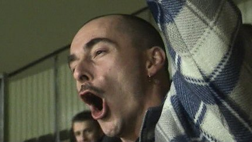

|
Roda JC - Excelsior (3-0) 22 september 2004 |
Op weg naar Kerkrade met enkele zakken sfeer-snippers.
Het was geen pretje in de wachtrij voor de kassa's.
Roda JC
- Excelsior (3-0) 22 september 2004
Op weg naar Kerkrade met enkele zakken sfeer-snippers.
Het was geen pretje in de wachtrij voor de kassa's.

Door de aanhoudende regenval was het vrijwel onmogelijk om
vanaf west de ongeveer 40 supporters van Excelsior te ontwaren.
Het Kone-doek op de verlaten oost-tribune.

Het gerucht dat via deze site verspreid werd dat Bret Holman
naar
Roda zou verkassen is bij deze uit de wereld.
De pest van west, je ziet de overkant niet. Toch legt Kone
hier de
bal over de doellijn: 1-0, (12').
Roda is veel sterker. Doelman Varkevisser van Excelsior
behoedt de
Rotterdammers voor menig doelpunt.
Cristiano scoort 2-0, (20').
Cristiano scoort 3-0, (51').
Kone en een Excelsiorspeler tijdelijk uitgeteld.

De sfeer op west is best.
Sven Vandenbroeck....Fussbalgott!
Een natte hoekschop van Van Dijk. (Ligt die bal niet een klein
beetje verkeerd?)
Het blijft 3-0 en zo bereikt Roda de derde ronde van de
Amstelcup.
De volgende tegenstander is Go Ahead Eagles, (uitwedstrijd).
De Kick Off was dicht en de omloop was stervenskoud. De
"grote kiosken" hebben we nimmer gevonden.